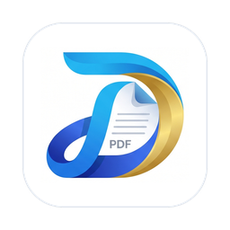
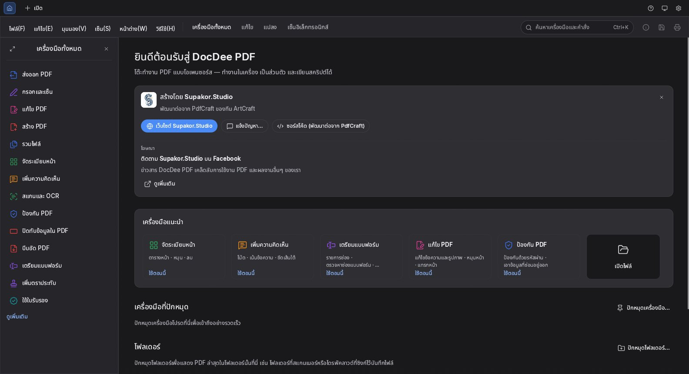

Supakor.Studio
Supakor.Studioวิธีติดตั้ง DocDee PDF
ติดตั้งได้ 3 แบบ เลือกแบบไหนก็ได้ ใช้เวลาประมาณ 2 นาที ใช้ได้กับ Windows 10 และ 11 (64 บิต) ฟรีทุกแบบ
ในหน้านี้: Microsoft Store ไฟล์ .msi แบบพกพา เปิดใช้งาน ตั้งเป็นโปรแกรมเปิด PDF หลัก อัปเดต / ถอนการติดตั้ง ปัญหาที่พบบ่อย
แบบที่ 1: ติดตั้งจาก Microsoft Store แนะนำ
-
เปิดหน้า DocDee PDF ใน Store
กดลิงก์ DocDee PDF บน Microsoft Store หรือเปิดแอป Microsoft Store ในเครื่อง แล้วค้นหาคำว่า DocDee
ถ้าเปิดจากเบราว์เซอร์ อาจมีกล่องถามว่า Open Microsoft Store? ให้กด Open
-
กด Get (รับ)
ในหน้าของ DocDee PDF กดปุ่มสีน้ำเงิน Get หรือ รับ ไม่ต้องจ่ายเงิน

DocDee PDFSupakor.StudioFree · ProductivityGet -
รอดาวน์โหลด แล้วกด Open (เปิด)
Store จะดาวน์โหลดและติดตั้งให้เอง เสร็จแล้วปุ่มจะเปลี่ยนเป็น Open / เปิด ไปต่อที่เปิดใช้งาน
DocDee PDFSupakor.StudioOpenติดตั้งจาก Store แล้ว เวลามีรุ่นใหม่ Store จะอัปเดตให้เอง ไม่ต้องดาวน์โหลดใหม่
แบบที่ 2: ติดตั้งด้วยไฟล์ .msi
-
ดาวน์โหลดไฟล์ติดตั้ง
กดปุ่ม ตัวติดตั้ง .msi ในหน้า DocDee PDF หรือเข้าหน้าดาวน์โหลดรุ่นล่าสุด แล้วเลือกไฟล์ที่ลงท้ายด้วย -windows-x64.msi (ขนาดประมาณ 100 MB)
ถ้า Chrome หรือ Edge บอกว่า "ไฟล์นี้ไม่ค่อยมีคนดาวน์โหลด" ให้กดที่รายการดาวน์โหลด แล้วเลือก Keep / เก็บไว้ (ใน Edge อาจต้องกด … ก่อน แล้วเลือก Keep anyway)
-
ดับเบิลคลิกไฟล์ .msi
เปิดโฟลเดอร์ Downloads แล้วดับเบิลคลิกไฟล์ DocDee-PDF-…-windows-x64.msi
-
ถ้าขึ้นหน้าจอสีน้ำเงิน "Windows protected your PC"
ให้กด More info (ข้อมูลเพิ่มเติม) ก่อน แล้วปุ่ม Run anyway (เรียกใช้ต่อไป) จะปรากฏขึ้นมา ให้กดปุ่มนั้น
① กด More info
Windows protected your PCMicrosoft Defender SmartScreen prevented an unrecognized app from starting…Don't run② กด Run anyway
Windows protected your PCRun anywayDon't runทำไมถึงขึ้นแบบนี้? ตัวติดตั้งยังไม่ได้ซื้อลายเซ็นดิจิทัล (ใบรับรองราคาหลายพันบาทต่อปี) Windows จึงขึ้นว่า "Unknown publisher" กับโปรแกรมใหม่ทุกตัวแบบนี้ ไม่ได้แปลว่าไฟล์มีไวรัส อยากมั่นใจว่าไฟล์ไม่ถูกแก้ไข ดูวิธีตรวจไฟล์ด้านล่าง หรือติดตั้งจาก Microsoft Store ที่ Microsoft ตรวจและเซ็นให้แล้ว
-
เลือกว่าใครจะใช้โปรแกรม
หน้าต่าง Who should use DocDee PDF? มีให้เลือก 2 แบบ
- Only for me (เฉพาะฉัน): แนะนำ ไม่ต้องใช้รหัสผู้ดูแลเครื่อง
- Everyone on this computer (ทุกคนในเครื่องนี้): Windows จะถามสิทธิ์ผู้ดูแล (Administrator) ให้กด Yes
Who should use DocDee PDF?Only for me (no administrator permission needed)Everyone on this computer (asks an administrator)NextCancelแล้วกด Next
-
กด Install
หน้าต่าง Install DocDee PDF มีตัวเลือกให้ ส่วนใหญ่ไม่ต้องแก้อะไร กด Install ได้เลย
Install DocDee PDFSetup will install DocDee PDF only for your account and add it to the Start menu.Install to:C:\Users\…\AppData\Local\Programs\Supakor.Studio\DocDee PDF\Browse…Create a desktop shortcutAdd Edit and Combine files to the right-click menu of PDF filesInstallCancel- Install to: โฟลเดอร์ที่ติดตั้ง กด Browse… ถ้าอยากเปลี่ยน
- Create a desktop shortcut: สร้างไอคอนบนหน้าจอ Desktop
- Add Edit and Combine files…: เพิ่มเมนู "แก้ไขด้วย DocDee" และ "รวมไฟล์" เวลาคลิกขวาที่ไฟล์ PDF
-
รอสักครู่ แล้วกด Finish
เมื่อขึ้นว่า Setup completed successfully กด Finish เป็นอันเสร็จ ไปต่อที่เปิดใช้งาน
Setup completed successfullyDocDee PDF setup has completed successfully. Click Finish to close this window.Finish
แบบที่ 3: แบบพกพา ไม่ต้องติดตั้ง (.zip)
เหมาะกับเครื่องที่ไม่มีสิทธิ์ติดตั้งโปรแกรม หรืออยากพกใส่แฟลชไดรฟ์ไปใช้หลายเครื่อง
-
ดาวน์โหลดไฟล์ .zip
เข้าหน้าดาวน์โหลดรุ่นล่าสุด แล้วเลือกไฟล์ที่ลงท้ายด้วย -windows-x64-portable.zip (ประมาณ 130 MB)
-
แตกไฟล์ (Extract All)
คลิกขวาที่ไฟล์ .zip ▸ เลือก Extract All… (แยกไฟล์ทั้งหมด) ▸ กด Extract
อย่าเปิด DocDee.exe จากในไฟล์ .zip โดยตรง ต้องแตกไฟล์ก่อน ไม่อย่างนั้นโปรแกรมจะหาไฟล์ประกอบไม่เจอ
-
ดับเบิลคลิก DocDee.exe
เปิดโฟลเดอร์ที่แตกออกมา แล้วดับเบิลคลิก DocDee.exe
📁 models📁 tesseract⚙️ docdee-cli.exeDocDee.exe📄 portable.txt📄 README.mdถ้าขึ้นหน้าจอสีน้ำเงิน "Windows protected your PC" ให้ทำแบบเดียวกับขั้นตอนนี้ (More info ▸ Run anyway)
การตั้งค่าของโปรแกรมจะเก็บในโฟลเดอร์ DocDeeData ข้างๆ DocDee.exe ย้ายหรือคัดลอกทั้งโฟลเดอร์ไปเครื่องอื่นได้เลย การตั้งค่าตามไปด้วย อย่าลบไฟล์ portable.txt ทิ้ง
เปิดใช้งาน
กดปุ่ม Start แล้วพิมพ์ DocDee หรือดับเบิลคลิกไอคอนบน Desktop (แบบพกพา: ดับเบิลคลิก DocDee.exe)
จะเจอหน้าแรกแบบนี้ กด เปิดไฟล์ หรือลากไฟล์ PDF มาวางในหน้าต่างได้เลย เครื่องมือทั้งหมดอยู่ที่แถบด้านซ้าย

ภาพจริงจากโปรแกรม (ธีมมืด)
หน้าจอโปรแกรมจะเป็นภาษาเดียวกับ Windows ถ้าอยากเปลี่ยนภาษา ไปที่ การตั้งค่า ▸ ภาษาของโปรแกรม
ตั้ง DocDee เป็นโปรแกรมเปิด PDF หลัก
- ครั้งแรกที่เปิด DocDee โปรแกรมจะถามว่า ตั้ง DocDee เป็นแอป PDF เริ่มต้นหรือไม่? ตอบตกลงได้เลย หรือตั้งเองภายหลังที่ การตั้งค่า ▸ ทั่วไป ▸ โปรแกรมเปิด PDF หลัก ▸ กด เปิดการตั้งค่าแอปเริ่มต้น
- Windows จะเปิดหน้า Default apps (แอปเริ่มต้น) ให้กดที่ .pdf แล้วเลือก DocDee PDF
หรือคลิกขวาที่ไฟล์ PDF ไฟล์ไหนก็ได้ ▸ Open with ▸ Choose another app ▸ เลือก DocDee PDF ▸ กด Always
ไฟล์ PDF ในเครื่องจะเปลี่ยนเป็นไอคอนลูกหมาบนกระดาษ PDF 🐶
อัปเดต / ถอนการติดตั้ง
- เช็กรุ่นใหม่: ในโปรแกรมไปที่เมนู วิธีใช้ ▸ ตรวจหาการอัปเดต
- ติดตั้งจาก Store: อัปเดตให้อัตโนมัติ ถอนการติดตั้งได้ที่ Settings ▸ Apps ▸ Installed apps
- แบบพกพา: แตกไฟล์ .zip รุ่นใหม่ แล้วย้ายโฟลเดอร์ DocDeeData จากโฟลเดอร์เก่ามาไว้ข้าง DocDee.exe ตัวใหม่ ถ้าจะเลิกใช้ ลบโฟลเดอร์ทิ้งได้เลย
- อัปเดต (.msi): ดาวน์โหลดไฟล์ .msi รุ่นใหม่แล้วติดตั้งทับได้เลย ไม่ต้องถอนรุ่นเก่าก่อน โปรแกรมจะติดตั้งลงโฟลเดอร์เดิม และการตั้งค่าของคุณยังอยู่ครบ
- ถอนการติดตั้ง (.msi): Settings ▸ Apps ▸ Installed apps ▸ หา DocDee PDF ▸ … ▸ Uninstall (หรือดับเบิลคลิกไฟล์ .msi รุ่นเดียวกันอีกครั้ง แล้วเลือก Remove)
ปัญหาที่พบบ่อย
| ไม่เห็นปุ่ม Run anyway | ต้องกดคำว่า More info ก่อน ปุ่มถึงจะขึ้น ถ้ายังไม่มี แปลว่าเครื่องของบริษัทหรือโรงเรียนอาจล็อกไม่ให้ติดตั้งโปรแกรมเอง ให้ติดตั้งจาก Microsoft Store หรือติดต่อฝ่าย IT |
| ขึ้นหน้าต่าง Files in use | DocDee ตัวเก่ายังเปิดอยู่ กด OK ให้ตัวติดตั้งปิดให้ แล้วติดตั้งต่อ |
| ขึ้น Setup failed | ลองรีสตาร์ทเครื่องแล้วติดตั้งใหม่ ถ้ายังไม่ได้ ถ่ายภาพหน้าจอส่งมาที่แชทเพจ Facebook |
| ไม่อยากติดตั้ง / ไม่มีสิทธิ์ติดตั้ง | ใช้แบบพกพา (.zip) แตกไฟล์แล้วเปิด DocDee.exe ได้เลย |
| อยากตรวจว่าไฟล์เป็นของแท้ | คลิกขวาที่ปุ่ม Start ▸ เปิด Terminal หรือ PowerShell แล้วพิมพ์ Get-FileHash $HOME\Downloads\DocDee-PDF-*.msi แล้วดูว่าค่า Hash ตรงกับค่า SHA-256 ในหน้ารุ่นบน GitHub ถ้าตรงกันแปลว่าไฟล์ไม่ถูกแก้ไข |
ติดปัญหาหรือมีคำแนะนำ
แจ้งได้จากเมนู วิธีใช้ ▸ แจ้งปัญหา… ในโปรแกรม, แชทเพจ Facebook หรืออีเมล supakor.studio@gmail.com
ภาพหน้าต่าง Windows และ Store ในหน้านี้เป็นภาพจำลอง หน้าจอจริงอาจต่างไปเล็กน้อยตามรุ่นของ Windows